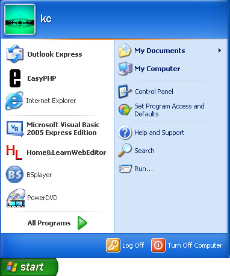
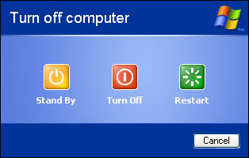
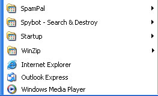
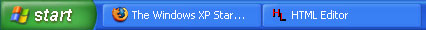

Free
computer Tutorials
|
Free
computer Tutorials
|
|
 home home |
Stay at Home and Learn | ||||
The Windows XP Start Menu
We saw in the last lesson that the desktop can be used to launch your software. Another way to launch your programmes is through the Start menu at the bottom of the Desktop. Your Start button should look something like the one below: Click your Start button once with your Left hand mouse button. What you will see is a menu popping up. This one below:  Notice the name "KC" next to the image. Yours will show the name you typed when setting up Windows XP.
The menu bar is split into three sections. The first section, the white one on the left, has seven items in it. The first three are shortcuts to a web browser, email software, and easyPHP. The four items under this are shortcuts to recently used programmes. These will change as you start up and close down software packages. Yours will probably be different items. One Single click with the Left mouse button on any of these items will launch some software. The second section has just one item in it: All Programs. There
is a green arrow next to this text. Clicking on the green arrow will
bring up menu where you can find all the software installed on your
computer. And this is the one we're interested in. We'll explain it
in more detail in a moment. At the bottom of the start menu are two buttons, one for logging off and one for closing down your computer. There is a difference between the two, but the one you'll probably want when it comes to turning off your computer is Shut Down. Clicking it once with your Left mouse button will give you this pop up box, called a dialogue box.  The dialogue box is giving you four options. Click the second option "Turn Off" with your left mouse button, a Single Click, if you want to completely close down your computer. The other popular option is "Restart". If you change your mind, click the Cancel button at the bottom. The dialogue box will disappear. But let's concentrate on that green button on the Start Menu, the one to the right of "All Programs." Click the button with your left mouse button. A menu will appear. Actually, it's a sub menu - a menu on a menu! It will look something like the one below:  As you can see, the Programs Sub menu is fairly small, but it gets bigger the more software you install. Your Programs menu may well be longer than this one. When you install some new software, a shortcut to it will probably be added to this Programs Sub menu. Notice the black arrows on the menu. This indicates that there is another submenu available. The menu will appear when you move your mouse to an item that has a black arrow next to it.
To launch one of your software programs, click an item on the list with your Left mouse button, a Single Click. When you do, the software is launched. To quickly close down the software you have launched, look in the right hand corner. Search for this, in the picture below Click the red X to close down your software. The one on the left of the three, with the single line, will make your software disappear. But it will not have closed down. Look at the bottom of your Desktop. You'll see something like this:  The two long rectangles indicate that two programmes are still open. In the image above, the Firefox web browser is open, as well as the Home and Learn Web Editor. What we'll do now is to create a Shortcut to your "My Documents" folder, which we will place on the Desktop. You will then be able to open this folder by Double-Clicking its icon on the desktop.
<--Back One Page Move on to the Next Part--> <--Back to the Beginner's Computing Contents Page View all our Home Study Computer Courses
|
|||||
|